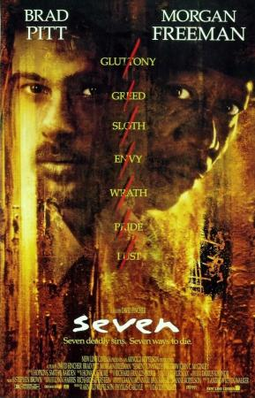

Seven |
||
|---|---|---|
|  | Sinopsis: El veterano teniente Somerset (Morgan Freeman), del departamento de homicidios, está a punto de jubilarse y ser reemplazado por el ambicioso e impulsivo detective David Mills (Brad Pitt). Ambos tendrán que colaborar en la resolución de una serie de asesinatos cometidos por un psicópata que toma como base la relación de los siete pecados capitales: gula, pereza, soberbia, avaricia, envidia, lujuria e ira. Los cuerpos de las víctimas, sobre los que el asesino se ensaña de manera impúdica, se convertirán para los policías en un enigma que les obligará a viajar al horror y la barbarie más absoluta. |
Director:David Fincher Reparto:Brad Pitt, Morgan Freeman, Gwyneth Paltrow Año: 1995 Duracion:127 min Pais:Estados Unidos |
Criticas Profesionales:Roger Ebert'Seven', un thriller oscuro, espeluznante, aterrador e inteligente, puede ser demasiado perturbador para mucha gente, supongo, aunque si puedes soportar su visionado, contemplarás cine de altísimo nivel |
Trailer |
Obtener:AlquilarComprar |
Registrate/Iniciar Sesion